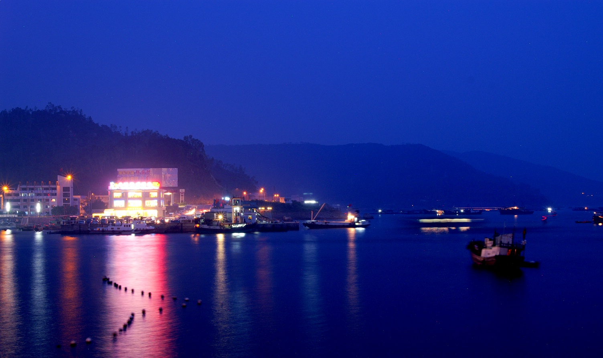

Pictures on Attractions Page (Left to Right):
- Eric Mueller's - Happy Valley Photo (CC-nc)
- Szymon Kochanski - Window of the World - Shenzhen, China (CC-nc-nd)
- OCT East Train - Public Domain
Shenzhen Bay - shenxy (CC)